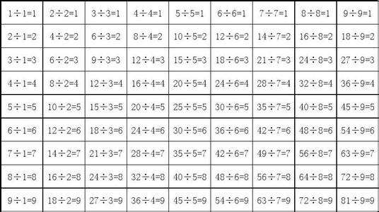

原图

固定宽度500px和高度200px后的图片
auto
固定宽度500px和高度200px－使用background－size:500px 200px缩放设置
固定宽度500px和高度200px－使用background-size:500px;的缩放设置
固定宽度500px和高度200px－使用background-size:100% 100%的缩放设置
固定宽度500px和高度200px－使用background-size:100%的缩放设置
使用属性cover来设置背景图片
使用属性contain来设置背景图片
给图片设置属性宽度为100%的情况下，可自适应图片
图片自适应问题，图片宽度设置100%，页面加载时会存在高度塌陷的问题
可以使用padding－top来设置百分比值来实现自适应 padding-top = (图片的高度/图片的宽度)*100